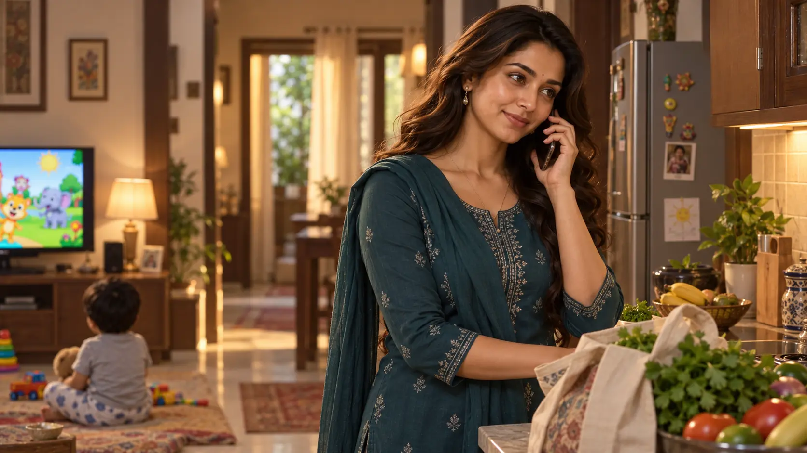

L108–112
Homecoming · Pappu and AuntyPappu runs into Dhika's arms while Aunty explains his food and milk. The frame restores the maternal/domestic register after the ride.
GENERATED_PENDING_REVIEW · apartment arrival · source map L108–112
Sequence: apartment return → Pappu/Aunty handoff → bathroom trace discovery → grocery order · L108–117.
Original wording remains untouched; complete local-language transformation and decoding are separate.
Pappu runs into Dhika's arms while Aunty explains his food and milk. The frame restores the maternal/domestic register after the ride.
Dhika notices the bra on the bathroom floor with mild puzzlement. No other person is inserted into the scene; her innocence and lack of suspicion remain visible.
After refreshing, Dhika calls Bindu Maami while Pappu watches rhymes. This sets up the delivery route without showing Chotu before his entrance.

E020 childcare return/feeding; E021 bra trace discovery + accidental-slip belief; E022 Bindu grocery order. Reader cause jaanta hai; Dhika nahi.Nahi. Woh Aunty/Uncle access yaad karti hai, lekin bra ke slip hokar girne ka explanation accept karti hai.
Source ab bhi aisa establish nahi karta.
Nahi. L112 ke mutabik Dhika use 7 PM par expect kar rahi hai.
Nahi. Sirf grocery order place hota hai; entrance L118 hai.
E020 maternal routine; E021 direct trace but false accidental explanation; E022 practical grocery setup.Caring mother and polite neighbour behavior remain stable. New delta: she sees suspicious physical evidence but does not connect it to wrongdoing.
Pappu shows growing independence with TV; Aunty remains caregiver; Bindu Maami is introduced as the 53-year-old nearby shopkeeper who receives Dhika's order.
E020 childcare trust reaffirmed. Dhika↔Uncle E021 hidden breach remains undiscovered despite trace. Dhika↔Mother reference + Dhika↔Bindu practical relation added. Others HOLD.Relationship history only. Character knowledge belongs in Knowledge / Secrecy; actions/observers belong in Action / Visibility.
| Relationship | Previous verified state | Current Part delta | Cumulative state through PART 5 |
|---|---|---|---|
| Dhika ↔ John | Married spouse/family baseline from Prologue; no conflict is established. | HOLD / UNCHANGED · No new relationship evidence in Part 5; retain the last verified state. | Married spouse/family baseline from Prologue; no conflict is established. |
| Dhika ↔ Pappu | Active mother-child care continues even while Pappu is temporarily entrusted to neighbours. | CHANGED · L108–117: Pappu runs to his mother; Dhika resumes food/TV/home-care routine. | Warm mother-child bond and routine caregiving are reaffirmed. |
| Dhika ↔ Students (general) | Positive teacher-student goodwill is reaffirmed; specific Bantu/Bobby dynamics are tracked separately. | HOLD / UNCHANGED · No new relationship evidence in Part 5; retain the last verified state. | Positive teacher-student goodwill is reaffirmed; specific Bantu/Bobby dynamics are tracked separately. |
| Dhika ↔ Aunty | Maternal/near-family neighbour bond with practical childcare trust. | CHANGED · L108–112: Aunty returns Pappu, reports his food intake, calls Dhika “Beti,” and gives childcare advice. | Maternal-neighbour trust and active childcare cooperation are reaffirmed. |
| Dhika ↔ Uncle | Dhika’s experienced/public trust is unchanged; hidden Uncle-side boundary breach is added to the relationship history. | CHANGED · L113–115: Dhika finds the physical trace but innocently explains it as an accident and does not suspect Uncle. | Conscious trust remains intact for Dhika; the reader-known hidden breach remains undisclosed and unresolved. |
| John ↔ Aunty/Uncle | Near-family neighbour/guardian relationship; John is not shown knowing Uncle’s concealed attraction. | HOLD / UNCHANGED · No new relationship evidence in Part 5; retain the last verified state. | Near-family neighbour/guardian relationship; John is not shown knowing Uncle’s concealed attraction. |
| Pappu ↔ Aunty/Uncle | Trusted neighbour-caregiver relationship for Pappu. | CHANGED · L108–112: Aunty has cared for Pappu, fed him rice/curd and returns him to Dhika. | Established neighbour-caregiver bond is actively reaffirmed. |
| Aunty ↔ Uncle | Marriage remains intact on-page; Uncle-side secrecy now also covers the Part 3 incident. | HOLD / UNCHANGED · No new relationship evidence in Part 5; retain the last verified state. | Marriage remains intact on-page; Uncle-side secrecy now also covers the Part 3 incident. |
| Dhika ↔ Bantu | Teacher-student familiarity now includes Bantu-side deliberate proximity-seeking/jealous disappointment; no Dhika-side romance is established. | HOLD / UNCHANGED · No new relationship evidence in Part 5; retain the last verified state. | Teacher-student familiarity now includes Bantu-side deliberate proximity-seeking/jealous disappointment; no Dhika-side romance is established. |
| Dhika ↔ Bobby | Teacher-student bond now carries a private visibility/proximity/contact history; romance or blanket permission is not established. | HOLD / UNCHANGED · No new relationship evidence in Part 5; retain the last verified state. | Teacher-student bond now carries a private visibility/proximity/contact history; romance or blanket permission is not established. |
| Bantu ↔ Bobby | Twin bond remains intact but gains competition, jealousy and a withheld-information layer. | HOLD / UNCHANGED · No new relationship evidence in Part 5; retain the last verified state. | Twin bond remains intact but gains competition, jealousy and a withheld-information layer. |
| Dhika ↔ Sharmi | Longstanding best-friend/colleague bond with playful, high-trust familiarity. | HOLD / UNCHANGED · No new relationship evidence in Part 5; retain the last verified state. | Longstanding best-friend/colleague bond with playful, high-trust familiarity. |
| Sharmi ↔ Raj | Married couple; only the referenced compliment context is relevant in E01, with no additional Raj behaviour shown. | HOLD / UNCHANGED · No new relationship evidence in Part 5; retain the last verified state. | Married couple; only the referenced compliment context is relevant in E01, with no additional Raj behaviour shown. |
| Dhika ↔ Raj | Reference-only connection through Sharmi; no affair, active relationship or broader Raj feelings are established. | HOLD / UNCHANGED · No new relationship evidence in Part 5; retain the last verified state. | Reference-only connection through Sharmi; no affair, active relationship or broader Raj feelings are established. |
| Dhika ↔ Her Mother | NOT ESTABLISHED before Part 5. | NEW / REFERENCED · L110: Dhika cites her mother’s advice to continue giving Pappu milk. | Off-screen mother-daughter family/advice relationship; no live E01 interaction is shown. |
| Dhika ↔ Bindu Maami | NOT ESTABLISHED before Part 5. | NEW · L116–117: Dhika calls the nearby departmental-store owner and places a grocery order. | Practical customer/storekeeper-neighbour connection. |
| Range | Action | Visibility |
|---|---|---|
| L108–112 | Pappu runs to Dhika; Aunty reports care. | Mutually visible family interaction. |
| L114–115 | Dhika finds bra on floor and places it by tap. | Dhika sees the trace; no other observer shown. |
| L116–117 | Dhika orders groceries. | Phone interaction with Bindu Maami. |
E021 mein Dhika ka accidental-slip belief earlier bra act ko permission nahi banata. Childcare/milk access purpose-limited hi rehta hai.Dhika's innocent interpretation is a knowledge state, not consent to the earlier act. Aunty's childcare role and Uncle's milk access remain separate from personal-item permission.
E021 ke baad Dhika only trace knows and accidental cause believe karti hai. Aunty/John true incident se unaware remain.| Fact | Who knows |
|---|---|
| Uncle handled/sniffed the bra. | Uncle + reader only. |
| Bra was found on floor. | Dhika + reader; Uncle knows he dropped it. |
| Dhika's accidental-slip explanation. | Dhika + reader; not confirmed shared. |
E021 consequence/discovery beat hai; behavioral normalization count mat badhao.Part 5 is a consequence/knowledge beat, not a second Uncle incident. Do not count Dhika's discovery as normalization of his behavior.
Domestic routine surrounds the clue, making the secret more visible to the reader without changing Dhika's conscious understanding.
E022 grocery delivery opens next route.| Hook | Status |
|---|---|
| Will Dhika find the bra? | RESOLVED: yes, at L114–115. |
| Will she discover the cause? | OPEN: no suspicion yet. |
| Who answers the grocery order? | Forward hook: Chotu arrives at L118. |
Dhika: maternal, practical and trusting; she sees the clue but chooses the accidental explanation.
Object continuity: bra moves from floor to tap/sink side.
Household: Pappu is with Dhika; John is expected later; Aunty has completed childcare handoff.
Next boundary: L118 doorbell and Chotu at the peephole begin Part 6.